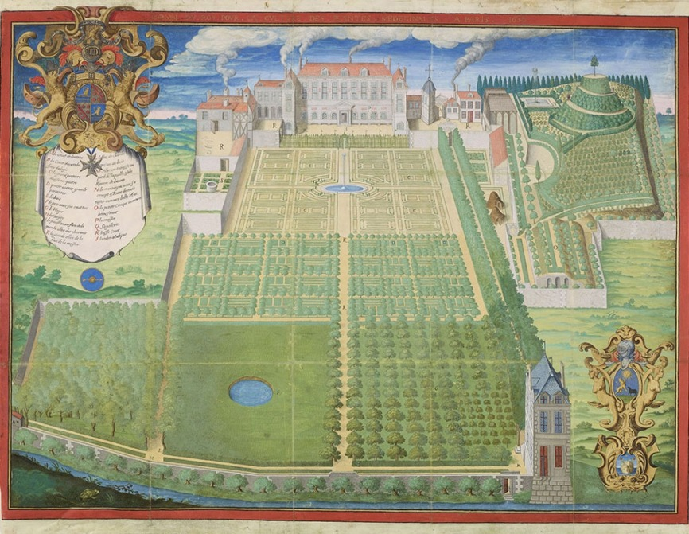

Histoire de la ménagerie du jardin des plantes
L’histoire du Jardin des Plantes remonte au XVIIe siècle. Autrefois nommé Jardin royal des plantes médicinales, il est créé en mai 1635 sur décision de Louis XIII pour en faire un jardin destiné à la formation des futurs médecins et apothicaires. Le domaine est alors constitué d’un château et d’un terrain près de la Seine. Dès le départ, ce fut un lieu de promenade ouvert au public, mais aussi – et surtout – d’observations et d’études de la nature.C’est sous l’impulsion de grandes figures scientifiques, comme Buffon, André Thouin, ou encore Geoffroy Saint-Hilaire, que ce lieu est devenu une institution incontournable du paysage parisien. S’étendant aujourd’hui sur un vaste espace de 24 hectares, le Jardin des Plantes est l’une des plus anciennes institutions scientifiques françaises après le Collège royal fondé en 1530 (aujourd’hui Collège de France), mais avant l’Académie royale des sciences (1666) et l’Observatoire de Paris (1672).
Le jardin de 1793 à nos jours
Le 10 juin 1793, la Convention proclame l’acte la naissance du Muséum d’histoire naturelle, réunissant le Jardin royal des plantes et le cabinet d’Histoire naturelle. Lors de la séance parlementaire, le député Lakanal déclare « de tous les monuments élevés par la munificence des nations à la gloire de la science naturelle, aucun n’a mieux mérité l’attention des législateurs que le jardin des plantes ». À partir de cette date, le paysage du jardin va progressivement être modifié pour atteindre l’apparence que nous lui connaissons aujourd’hui. L’année 1794 voit l’ouverture officielle de la Ménagerie, puis tout au long du XIXe siècle, de nouveaux bâtiments sont construits pour abriter des collections toujours plus importantes et diversifiées. Ainsi les premières Grandes Serres sont érigées en 1834–1836 par Rohault de Fleury, précurseur de l’architecture métallique en France, et sont consacrées à la flore de Nouvelle-Calédonie. Elles seront suivies en 1937 d’un « grand jardin d’hiver » de style Art déco, œuvre de René-Félix Bergé. En 1837 est inaugurée la Galerie de Minéralogie et de Géologie, dont le péristyle et le fronton triangulaire de l’aile droite rappellent le style grec classique.